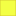

<!doctype html>
<html lang="en">
    <head>
        <meta charset="utf-8">
        <meta http-equiv="X-UA-Compatible" content="IE=edge">
        <meta name="viewport" content="initial-scale=1,user-scalable=no,maximum-scale=1,width=device-width">
        <meta name="mobile-web-app-capable" content="yes">
        <meta name="apple-mobile-web-app-capable" content="yes">
        <link rel="stylesheet" href="css/leaflet.css"><link rel="stylesheet" href="css/L.Control.Locate.min.css">
        <link rel="stylesheet" href="css/qgis2web.css"><link rel="stylesheet" href="css/fontawesome-all.min.css">
        <link rel="stylesheet" href="css/leaflet-control-geocoder.Geocoder.css">
        <style>
        #map {
            width: 1617px;
            height: 791px;
        }
        </style>
        <title>Mobilité internationale,volontariat et engagement citoyen</title>
    </head>
    <body>
        <div id="map">
        </div>
        <script src="js/qgis2web_expressions.js"></script>
        <script src="js/leaflet.js"></script><script src="js/L.Control.Locate.min.js"></script>
        <script src="js/leaflet-svg-shape-markers.min.js"></script>
        <script src="js/leaflet.rotatedMarker.js"></script>
        <script src="js/leaflet.pattern.js"></script>
        <script src="js/leaflet-hash.js"></script>
        <script src="js/Autolinker.min.js"></script>
        <script src="js/rbush.min.js"></script>
        <script src="js/labelgun.min.js"></script>
        <script src="js/labels.js"></script>
        <script src="js/leaflet-control-geocoder.Geocoder.js"></script>
        <script src="data/RgionHautsdeFrance_2.js"></script>
        <script src="data/Autres_3.js"></script>
        <script src="data/ChantiersinternationauxCI_4.js"></script>
        <script src="data/CorpsEuropendeSolidaritCES_5.js"></script>
        <script>
        var highlightLayer;
        function highlightFeature(e) {
            highlightLayer = e.target;
            highlightLayer.openPopup();
        }
        var map = L.map('map', {
            zoomControl:true, maxZoom:28, minZoom:1
        }).fitBounds([[43.152923756323275,-8.302897209638063],[51.24953767321996,15.920349849716409]]);
        var hash = new L.Hash(map);
        map.attributionControl.setPrefix('<a href="https://github.com/tomchadwin/qgis2web" target="_blank">qgis2web</a> &middot; <a href="https://leafletjs.com" title="A JS library for interactive maps">Leaflet</a> &middot; <a href="https://qgis.org">QGIS</a>');
        var autolinker = new Autolinker({truncate: {length: 30, location: 'smart'}});
        L.control.locate({locateOptions: {maxZoom: 19}}).addTo(map);
        var bounds_group = new L.featureGroup([]);
        function setBounds() {
            map.setMaxBounds(map.getBounds());
        }
        map.createPane('pane_Cartedefond_0');
        map.getPane('pane_Cartedefond_0').style.zIndex = 400;
        var layer_Cartedefond_0 = L.tileLayer('http://a.basemaps.cartocdn.com/light_all/{z}/{x}/{y}@2x.png', {
            pane: 'pane_Cartedefond_0',
            opacity: 1.0,
            attribution: '<a href="https://cartodb.com/basemaps/">Map tiles by CartoDB, under CC BY 3.0. Data by OpenStreetMap, under ODbL.</a>',
            minZoom: 1,
            maxZoom: 28,
            minNativeZoom: 0,
            maxNativeZoom: 20
        });
        layer_Cartedefond_0;
        map.addLayer(layer_Cartedefond_0);
        map.createPane('pane_Cartedefond_1');
        map.getPane('pane_Cartedefond_1').style.zIndex = 401;
        var layer_Cartedefond_1 = L.tileLayer('http://a.basemaps.cartocdn.com/light_all/{z}/{x}/{y}@2x.png', {
            pane: 'pane_Cartedefond_1',
            opacity: 1.0,
            attribution: '<a href="https://cartodb.com/basemaps/">Map tiles by CartoDB, under CC BY 3.0. Data by OpenStreetMap, under ODbL.</a>',
            minZoom: 1,
            maxZoom: 28,
            minNativeZoom: 0,
            maxNativeZoom: 20
        });
        layer_Cartedefond_1;
        map.addLayer(layer_Cartedefond_1);
        function pop_RgionHautsdeFrance_2(feature, layer) {
            layer.on({
                mouseout: function(e) {
                    if (typeof layer.closePopup == 'function') {
                        layer.closePopup();
                    } else {
                        layer.eachLayer(function(feature){
                            feature.closePopup()
                        });
                    }
                },
                mouseover: highlightFeature,
            });
        }

        function style_RgionHautsdeFrance_2_0() {
            return {
                pane: 'pane_RgionHautsdeFrance_2',
                opacity: 1,
                color: 'rgba(35,35,35,1.0)',
                dashArray: '',
                lineCap: 'butt',
                lineJoin: 'miter',
                weight: 2.0, 
                fill: true,
                fillOpacity: 1,
                fillColor: 'rgba(190,178,151,0.0)',
                interactive: false,
            }
        }
        map.createPane('pane_RgionHautsdeFrance_2');
        map.getPane('pane_RgionHautsdeFrance_2').style.zIndex = 402;
        map.getPane('pane_RgionHautsdeFrance_2').style['mix-blend-mode'] = 'normal';
        var layer_RgionHautsdeFrance_2 = new L.geoJson(json_RgionHautsdeFrance_2, {
            attribution: '',
            interactive: false,
            dataVar: 'json_RgionHautsdeFrance_2',
            layerName: 'layer_RgionHautsdeFrance_2',
            pane: 'pane_RgionHautsdeFrance_2',
            onEachFeature: pop_RgionHautsdeFrance_2,
            style: style_RgionHautsdeFrance_2_0,
        });
        bounds_group.addLayer(layer_RgionHautsdeFrance_2);
        map.addLayer(layer_RgionHautsdeFrance_2);
        function pop_Autres_3(feature, layer) {
            layer.on({
                mouseout: function(e) {
                    if (typeof layer.closePopup == 'function') {
                        layer.closePopup();
                    } else {
                        layer.eachLayer(function(feature){
                            feature.closePopup()
                        });
                    }
                },
                mouseover: highlightFeature,
            });
            var popupContent = '<table>\
                    <tr>\
                        <td colspan="2">' + (feature.properties['DISPOSITIF'] !== null ? autolinker.link(feature.properties['DISPOSITIF'].toLocaleString()) : '') + '</td>\
                    </tr>\
                    <tr>\
                        <td colspan="2">' + (feature.properties['ORGANISME'] !== null ? autolinker.link(feature.properties['ORGANISME'].toLocaleString()) : '') + '</td>\
                    </tr>\
                    <tr>\
                        <td colspan="2">' + (feature.properties['ADRESSE'] !== null ? autolinker.link(feature.properties['ADRESSE'].toLocaleString()) : '') + '</td>\
                    </tr>\
                    <tr>\
                        <td colspan="2">' + (feature.properties['PERSONNE'] !== null ? autolinker.link(feature.properties['PERSONNE'].toLocaleString()) : '') + '</td>\
                    </tr>\
                    <tr>\
                        <td colspan="2">' + (feature.properties['CONTACT'] !== null ? autolinker.link(feature.properties['CONTACT'].toLocaleString()) : '') + '</td>\
                    </tr>\
                </table>';
            layer.bindPopup(popupContent, {maxHeight: 400});
        }

        function style_Autres_3_0() {
            return {
                pane: 'pane_Autres_3',
                radius: 5.999999999999998,
                opacity: 1,
                color: 'rgba(50,87,128,1.0)',
                dashArray: '',
                lineCap: 'butt',
                lineJoin: 'miter',
                weight: 2.0,
                fill: true,
                fillOpacity: 1,
                fillColor: 'rgba(72,123,182,1.0)',
                interactive: true,
            }
        }
        map.createPane('pane_Autres_3');
        map.getPane('pane_Autres_3').style.zIndex = 403;
        map.getPane('pane_Autres_3').style['mix-blend-mode'] = 'normal';
        var layer_Autres_3 = new L.geoJson(json_Autres_3, {
            attribution: '',
            interactive: true,
            dataVar: 'json_Autres_3',
            layerName: 'layer_Autres_3',
            pane: 'pane_Autres_3',
            onEachFeature: pop_Autres_3,
            pointToLayer: function (feature, latlng) {
                var context = {
                    feature: feature,
                    variables: {}
                };
                return L.circleMarker(latlng, style_Autres_3_0(feature));
            },
        });
        bounds_group.addLayer(layer_Autres_3);
        map.addLayer(layer_Autres_3);
        function pop_ChantiersinternationauxCI_4(feature, layer) {
            layer.on({
                mouseout: function(e) {
                    if (typeof layer.closePopup == 'function') {
                        layer.closePopup();
                    } else {
                        layer.eachLayer(function(feature){
                            feature.closePopup()
                        });
                    }
                },
                mouseover: highlightFeature,
            });
            var popupContent = '<table>\
                    <tr>\
                        <td colspan="2"><strong>DISPOSITIF</strong><br />' + (feature.properties['DISPOSITIF'] !== null ? autolinker.link(feature.properties['DISPOSITIF'].toLocaleString()) : '') + '</td>\
                    </tr>\
                    <tr>\
                        <td colspan="2"><strong>ORGANISME</strong><br />' + (feature.properties['ORGANISME'] !== null ? autolinker.link(feature.properties['ORGANISME'].toLocaleString()) : '') + '</td>\
                    </tr>\
                    <tr>\
                        <td colspan="2"><strong>ADRESSE</strong><br />' + (feature.properties['ADRESSE'] !== null ? autolinker.link(feature.properties['ADRESSE'].toLocaleString()) : '') + '</td>\
                    </tr>\
                    <tr>\
                        <td colspan="2"><strong>PERSONNE</strong><br />' + (feature.properties['PERSONNE'] !== null ? autolinker.link(feature.properties['PERSONNE'].toLocaleString()) : '') + '</td>\
                    </tr>\
                    <tr>\
                        <td colspan="2"><strong>CONTACT</strong><br />' + (feature.properties['CONTACT'] !== null ? autolinker.link(feature.properties['CONTACT'].toLocaleString()) : '') + '</td>\
                    </tr>\
                </table>';
            layer.bindPopup(popupContent, {maxHeight: 400});
        }

        function style_ChantiersinternationauxCI_4_0() {
            return {
                pane: 'pane_ChantiersinternationauxCI_4',
                shape: 'triangle',
                radius: 5.999999999999998,
                opacity: 1,
                color: 'rgba(128,17,25,1.0)',
                dashArray: '',
                lineCap: 'butt',
                lineJoin: 'miter',
                weight: 2.0,
                fill: true,
                fillOpacity: 1,
                fillColor: 'rgba(219,30,42,1.0)',
                interactive: true,
            }
        }
        map.createPane('pane_ChantiersinternationauxCI_4');
        map.getPane('pane_ChantiersinternationauxCI_4').style.zIndex = 404;
        map.getPane('pane_ChantiersinternationauxCI_4').style['mix-blend-mode'] = 'normal';
        var layer_ChantiersinternationauxCI_4 = new L.geoJson(json_ChantiersinternationauxCI_4, {
            attribution: '',
            interactive: true,
            dataVar: 'json_ChantiersinternationauxCI_4',
            layerName: 'layer_ChantiersinternationauxCI_4',
            pane: 'pane_ChantiersinternationauxCI_4',
            onEachFeature: pop_ChantiersinternationauxCI_4,
            pointToLayer: function (feature, latlng) {
                var context = {
                    feature: feature,
                    variables: {}
                };
                return L.shapeMarker(latlng, style_ChantiersinternationauxCI_4_0(feature));
            },
        });
        bounds_group.addLayer(layer_ChantiersinternationauxCI_4);
        map.addLayer(layer_ChantiersinternationauxCI_4);
        function pop_CorpsEuropendeSolidaritCES_5(feature, layer) {
            layer.on({
                mouseout: function(e) {
                    if (typeof layer.closePopup == 'function') {
                        layer.closePopup();
                    } else {
                        layer.eachLayer(function(feature){
                            feature.closePopup()
                        });
                    }
                },
                mouseover: highlightFeature,
            });
            var popupContent = '<table>\
                    <tr>\
                        <td colspan="2"><strong>DISPOSITIF</strong><br />' + (feature.properties['DISPOSITIF'] !== null ? autolinker.link(feature.properties['DISPOSITIF'].toLocaleString()) : '') + '</td>\
                    </tr>\
                    <tr>\
                        <td colspan="2"><strong>ORGANISME</strong><br />' + (feature.properties['ORGANISME'] !== null ? autolinker.link(feature.properties['ORGANISME'].toLocaleString()) : '') + '</td>\
                    </tr>\
                    <tr>\
                        <td colspan="2"><strong>ADRESSE</strong><br />' + (feature.properties['ADRESSE'] !== null ? autolinker.link(feature.properties['ADRESSE'].toLocaleString()) : '') + '</td>\
                    </tr>\
                    <tr>\
                        <td colspan="2"><strong>PERSONNE</strong><br />' + (feature.properties['PERSONNE'] !== null ? autolinker.link(feature.properties['PERSONNE'].toLocaleString()) : '') + '</td>\
                    </tr>\
                    <tr>\
                        <td colspan="2"><strong>CONTACT</strong><br />' + (feature.properties['CONTACT'] !== null ? autolinker.link(feature.properties['CONTACT'].toLocaleString()) : '') + '</td>\
                    </tr>\
                </table>';
            layer.bindPopup(popupContent, {maxHeight: 400});
        }

        function style_CorpsEuropendeSolidaritCES_5_0() {
            return {
                pane: 'pane_CorpsEuropendeSolidaritCES_5',
                shape: 'square',
                radius: 6.000000000000002,
                opacity: 1,
                color: 'rgba(219,214,56,1.0)',
                dashArray: '',
                lineCap: 'butt',
                lineJoin: 'miter',
                weight: 2.0,
                fill: true,
                fillOpacity: 1,
                fillColor: 'rgba(243,255,69,1.0)',
                interactive: true,
            }
        }
        map.createPane('pane_CorpsEuropendeSolidaritCES_5');
        map.getPane('pane_CorpsEuropendeSolidaritCES_5').style.zIndex = 405;
        map.getPane('pane_CorpsEuropendeSolidaritCES_5').style['mix-blend-mode'] = 'normal';
        var layer_CorpsEuropendeSolidaritCES_5 = new L.geoJson(json_CorpsEuropendeSolidaritCES_5, {
            attribution: '',
            interactive: true,
            dataVar: 'json_CorpsEuropendeSolidaritCES_5',
            layerName: 'layer_CorpsEuropendeSolidaritCES_5',
            pane: 'pane_CorpsEuropendeSolidaritCES_5',
            onEachFeature: pop_CorpsEuropendeSolidaritCES_5,
            pointToLayer: function (feature, latlng) {
                var context = {
                    feature: feature,
                    variables: {}
                };
                return L.shapeMarker(latlng, style_CorpsEuropendeSolidaritCES_5_0(feature));
            },
        });
        bounds_group.addLayer(layer_CorpsEuropendeSolidaritCES_5);
        map.addLayer(layer_CorpsEuropendeSolidaritCES_5);
            var title = new L.Control();
            title.onAdd = function (map) {
                this._div = L.DomUtil.create('div', 'info');
                this.update();
                return this._div;
            };
            title.update = function () {
                this._div.innerHTML = '<h2>Mobilité internationale,volontariat et engagement citoyen</h2>';
            };
            title.addTo(map);
            var abstract = new L.Control({'position':'topleft'});
            abstract.onAdd = function (map) {
                this._div = L.DomUtil.create('div',
                'leaflet-control abstract');
                this._div.id = 'abstract'
                    this._div.setAttribute("onmouseenter", "abstract.show()");
                    this._div.setAttribute("onmouseleave", "abstract.hide()");
                    this.hide();
                    return this._div;
                };
                abstract.hide = function () {
                    this._div.classList.remove("abstractUncollapsed");
                    this._div.classList.add("abstract");
                    this._div.innerHTML = 'i'
                }
                abstract.show = function () {
                    this._div.classList.remove("abstract");
                    this._div.classList.add("abstractUncollapsed");
                    this._div.innerHTML = 'Cette cartographie indique les différents acteurs de la mobilité internationale dans la région des Hauts-de-France. Les dispositifs sont multiples avec en majorité, dans le territoire des Hauts-de-France, le Corps Européen de Solidarité (CES) et les Chantiers Internationaux (CI).<br />NB : Bien évidemment, cette cartographie n\'est pas exhaustive.<br />Lien utile : https://www.ready-to-move.fr/je-veux-partir-pour/ ';
            };
            abstract.addTo(map);
        var osmGeocoder = new L.Control.Geocoder({
            collapsed: true,
            position: 'topleft',
            text: 'Search',
            title: 'Testing'
        }).addTo(map);
        document.getElementsByClassName('leaflet-control-geocoder-icon')[0]
        .className += ' fa fa-search';
        document.getElementsByClassName('leaflet-control-geocoder-icon')[0]
        .title += 'Search for a place';
        var baseMaps = {};
        L.control.layers(baseMaps,{' Corps Européen de Solidarité (CES)': layer_CorpsEuropendeSolidaritCES_5,' Chantiers internationaux (CI)': layer_ChantiersinternationauxCI_4,' Autres': layer_Autres_3,' Région Hauts-de-France': layer_RgionHautsdeFrance_2,"Carte de fond": layer_Cartedefond_1,"Carte de fond": layer_Cartedefond_0,},{collapsed:false}).addTo(map);
        setBounds();
        </script>
    </body>
</html>
